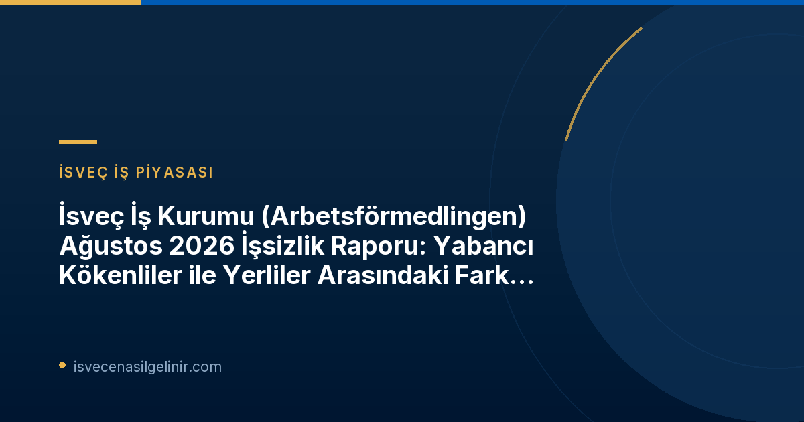

İsveç İş Piyasasında Ağustos 2026 Gelişmeleri
Arbetsförmedlingen'in açıklamasına göre, Ağustos 2026 itibarıyla İsveç'te işsizlik genel olarak azaldı. Toplamda 349.000'den fazla kişi işsiz olarak kayıtlı olup, bu da işgücünün %6,5'ine tekabül ediyor. Geçen yılın aynı dönemine kıyasla yaklaşık 22.000 kişilik bir düşüş yaşandı. Bu düşüş özellikle yabancı kökenli nüfus arasında daha belirgin.Detaylı Analiz: Yabancı Kökenliler ve İstihdam
Arbetsförmedlingen analisti Marcus Löwing, "Bunu görmek sevindirici," diyerek yabancı kökenlilerin istihdam piyasasına entegrasyonundaki olumlu gelişmeleri vurguladı. Ancak Löwing, yabancı kökenliler arasındaki işsizlik oranının (%13,4) hala İsveç doğumlu vatandaşlara (%4,2) kıyasla önemli ölçüde yüksek olduğunu belirtti. Uzun süreli işsizliğin de bu grupta daha yaygın olduğu gözlemleniyor. İsveç iş piyasasına uyum sağlamanın zaman aldığını ve birçok işin eğitim veya önceki deneyim gerektirdiğini belirten Löwing, İsveç'te geçirilen sürenin uzamasıyla iş piyasasında rekabet gücünün arttığını ifade etti. Örneğin, 2016 yılında İsveç'e yerleşen Avrupa dışı kökenli kişilerin işsizlik oranının beş yıl içinde yarı yarıya azaldığını gösteren raporlar bulunuyor. Bu durum, uzun vadede entegrasyonun ve dil becerilerinin önemini bir kez daha ortaya koyuyor.İsveç Vatandaşlık Süreci İçin Önemli İpuçları
İsveç'te kalıcı olmak ve iş gücüne entegre olmak, vatandaşlık yolculuğunun kritik adımlarından biridir. İsveç vatandaşlık testine hazırlanarak ülkenin değerlerini ve toplumsal yapısını daha iyi anlayabilirsiniz. Detaylı bilgilere ve hazırlık kaynaklarına İsveç Vatandaşlık Testi sayfasından ulaşabilirsiniz.Ağustos 2026 İşsizlik Verileri Tablosu
Aşağıdaki tablo, Ağustos 2026 itibarıyla İsveç iş piyasasının kısa bir özetini ve Ağustos 2025 ile karşılaştırmalı verilerini sunmaktadır:| Gösterge | Ağustos 2026 | Ağustos 2025 (%) | Ağustos 2025 (Kişi Sayısı) |
|---|---|---|---|
| Kayıtlı İşsiz Oranı | %6,5 | %7,0 | - |
| Toplam Kayıtlı İşsiz Sayısı | 349.398 | - | 371.356 |
| 18-24 Yaş Genç İşsiz Oranı | %7,8 | %8,4 | - |
| 18-24 Yaş Genç İşsiz Sayısı | 42.361 | - | 45.186 |
| 12 Ay veya Daha Uzun Süreli İşsiz Sayısı | 149.016 | - | 154.834 |
| Açıkça İşsiz Sayısı | 201.764 | - | 208.656 |
| Aktivite Destek Programlarına Katılan Kişi Sayısı | 147.634 | - | 162.700 |
| Yeni İş Başvurusu Yapan Kişi Sayısı | 37.541 | - | 38.717 |
| İşe Yerleşen Kişi Sayısı | 32.564 | - | 32.635 |
| İşten Çıkarma Bildirimi Alan Kişi Sayısı | 2.925 | - | 2.457 |
Arbetsförmedlingen İstatistiklerinin Anlamı ve Kapsamı
Arbetsförmedlingen'in aylık basın bültenleri, kurumun kendi operasyonel istatistiklerini yansıtmaktadır. Bu veriler, kayıtlı işsizler ve yeni bildirilen açık pozisyonlar gibi Arbetsförmedlingen kayıtlarına dayanmaktadır. Arbetsförmedlingen'in işsizlik istatistikleri, kuruma kayıtlı iş arayanların çeşitli kategorilerini gösterir:- Açıkça İşsiz (Öppet arbetslösa): İşsiz olan, aktif olarak iş arayan ve derhal işe başlayabilecek durumda olan kişilerdir.
- Aktivite Destek Programlarındaki Arayanlar (Sökande i program med aktivitetsstöd): Aktivite destek programlarına katılan iş arayanları ifade eder.
Geleceğe Yönelik Beklentiler
Arbetsförmedlingen'in verileri, İsveç iş piyasasında yabancı kökenli bireylerin istihdama katılımında ilerleme kaydedildiğini göstermektedir. Bu olumlu eğilim, gelecekte işgücü piyasasındaki eşitsizliklerin daha da azalacağının sinyallerini vermektedir. Ancak, uzun süreli işsizlik ve eğitim/deneyim gereksinimleri gibi zorluklar devam etmekte olup, bu alanlarda ek çabaların gerekli olduğu vurgulanmaktadır. Arbetsförmedlingen, Eylül ayı faaliyet istatistiklerini 15 Ekim 2026 tarihinde, saat 06:00'da yayınlayacaktır. Bu yeni raporlar, piyasadaki güncel durumu daha da netleştirecektir.Referanslar
- Arbetsförmedlingen Pressmeddelande: Gapet mellan utrikes och inrikes födda krymper
- sverigemedborgarskapsprov.com
İsveç'teki Fırsatları Kaçırmayın!
İsveç'te yaşamak, çalışmak ve vatandaşlık almak mı istiyorsunuz? Detaylı rehberler, güncel bilgiler ve vatandaşlık testi hazırlık materyalleri için sitemizi ziyaret edin. Hayallerinize ulaşmak için ilk adımı atın!